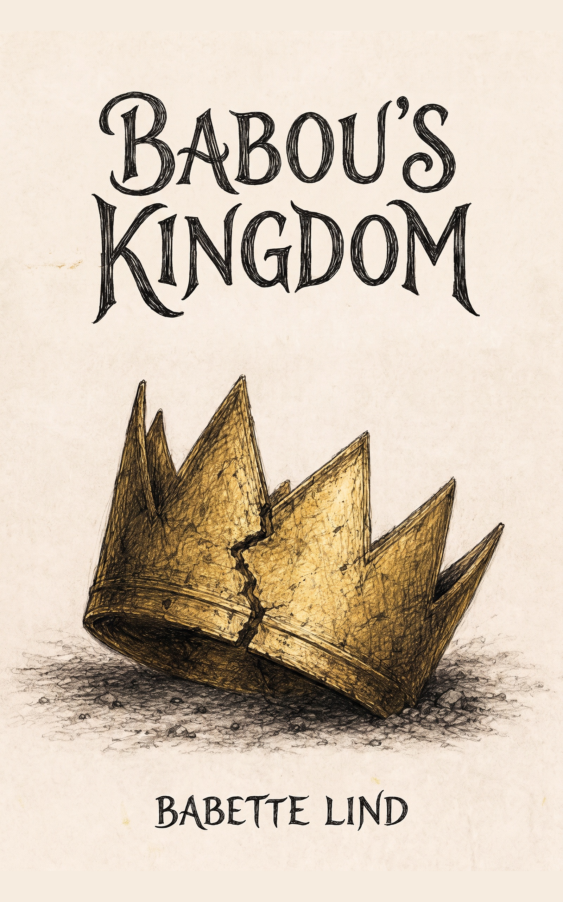

Books
Stories shaped by heritage, resilience, imagination, and belonging.
Explore BooksLind & Lore
Tales of heritage, heart, and the unseen threads that connect us across time and continents.
A creative home
Welcome to the story world of Babette Lind Mendy — a home for books, reflections, and creative work shaped by heritage, imagination, belonging, and the power of story.
Here, stories are more than entertainment. They can hold memory, offer refuge, open difficult conversations, and create new ways of seeing one another.
Featured Story
An adventure of courage, movement, imagination, and hope.

Created for readers aged 8–12, Babou’s Kingdom explores the human experience behind war, migration, and displacement through a child’s eyes.
A tender invitation into conversations about courage, belonging, friendship and the hope a child carries forward.
The storyteller
Born in Stockholm to a Swedish mother and Gambian father, Babette Lind Mendy writes stories shaped by identity, ancestry, imagination, and emotional truth.
Her work is rooted in a lifelong relationship with storytelling and a belief in the power of books to help us escape, understand, connect, and feel less alone.
About BabetteStep inside
A growing home for stories, reflections and work still unfolding.
Stories shaped by heritage, resilience, imagination, and belonging.
Explore BooksReflections on writing, creativity, heritage, and the stories behind the stories.
Read the JournalStory-led resources for conversations about home, displacement, belonging, and hope.
Explore Resources